데이터 결과창 관련¶
이후 시각화 View가 표시되며 Query에서 결과 테이터를 시각화하여 표시된다. 간선은 1:N, Self-loop 간선 등을 지원한다.
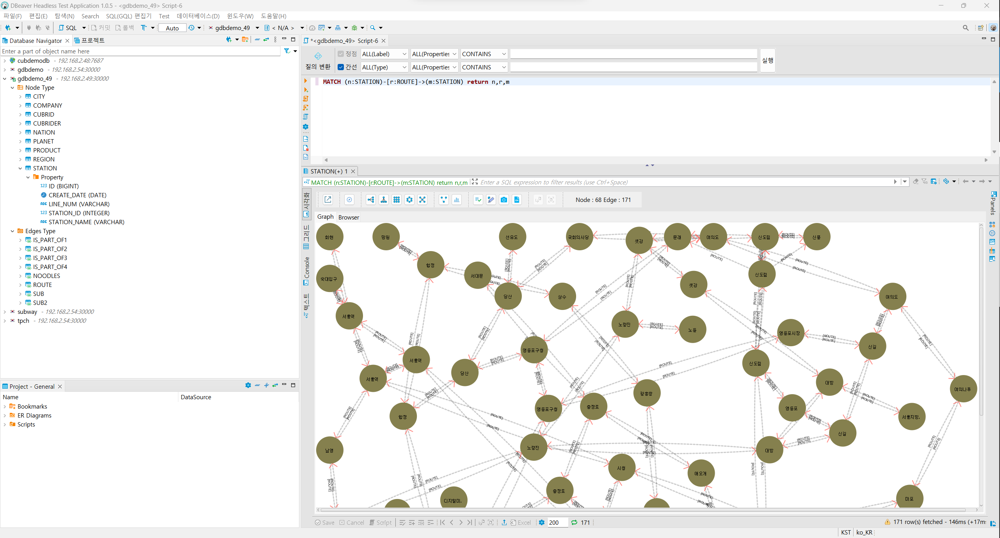 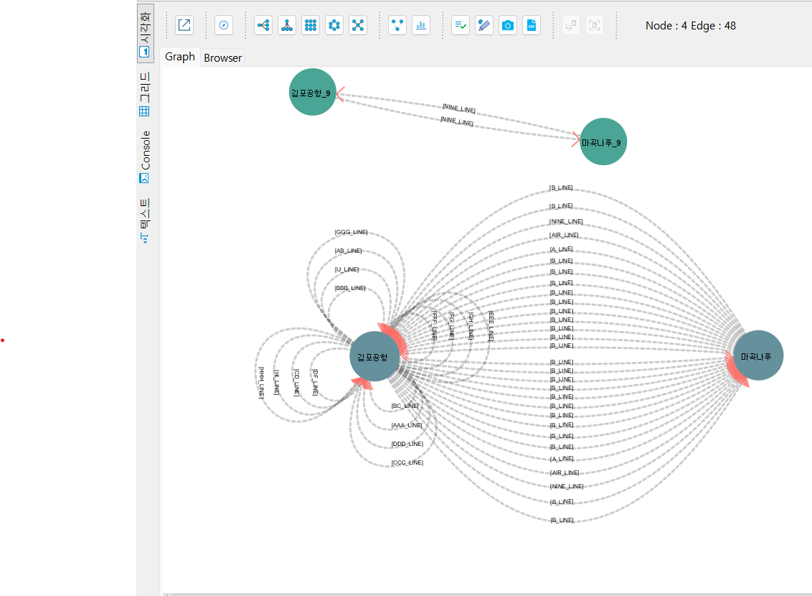또한 결과 데이터는 [Visualization]{시각화 뷰}외에
그리드, Console, 텍스트 형태로 확인이 가능하다.
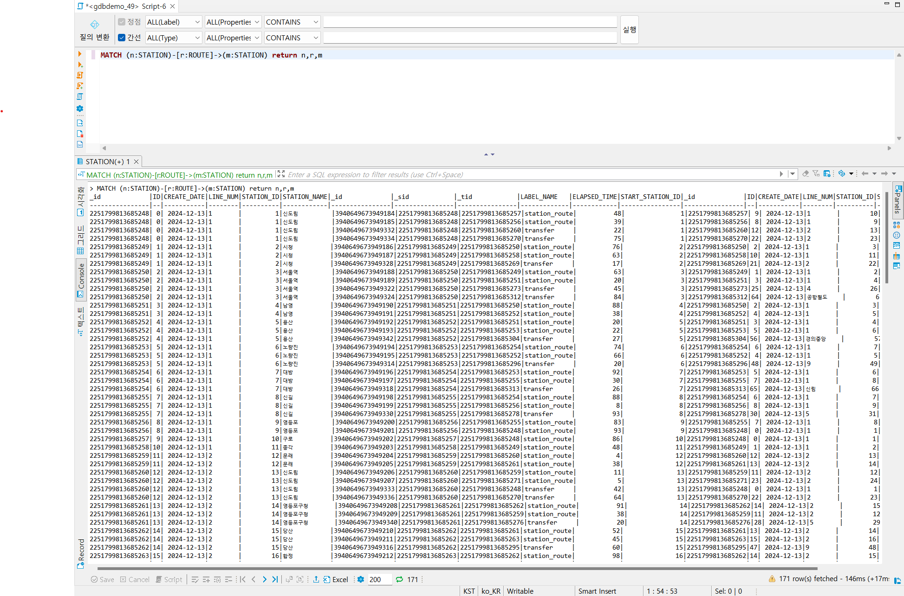 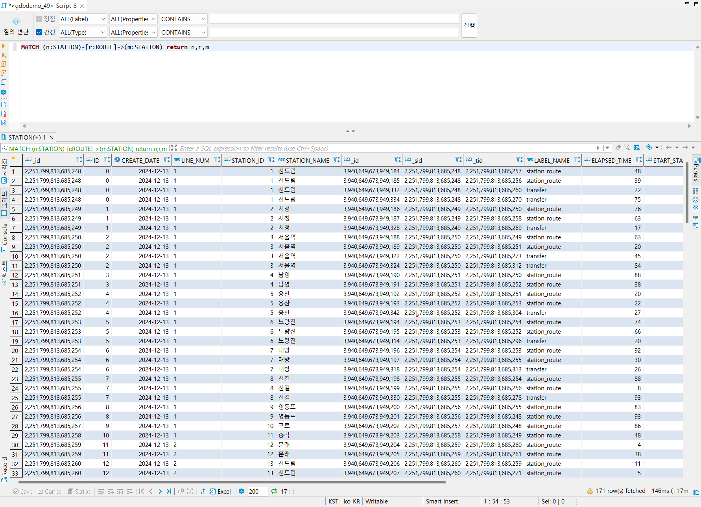Mini Map¶
아래 화면에서 빨간색 표시부분 아이콘 버튼을 사용하면 MiniMap을 열거나 닫을 수 있다. 추가 기능 사항으로 미니맵에 포인트 표시 및 이동 기능이 추가 되어 미니맵 내 마우스 클릭 시 이동 및 포인트 표시가 가능하다.
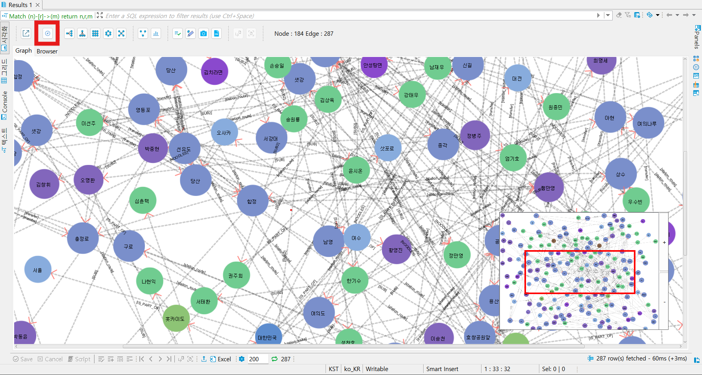확대 축소 하기¶
아래 화면에서 노란색 표시부분 [+],[-] 버튼을 사용하면 확대/축소가 가능하다. 또한 < Ctrl + 키보드+ >, < Ctrl + 키보드- > 를 통해서도 확대/축소가 가능하다.
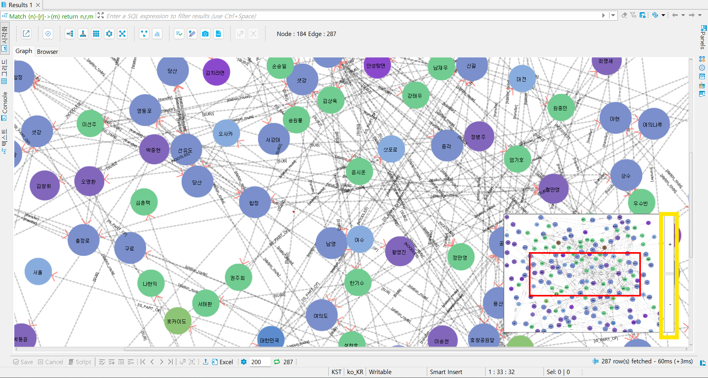HighLight 설정¶
Node를 마우스로 두번 클릭하면 선택 된 정점이 빨간색 테두리를 통해 표시된다. 마우스 오른쪽 버튼으로 팝업 메뉴를 활성화 할 수 있다. 이후 [HighLight]를 선택하면 Node와 연결 된 Edge 및 Target Node가 HighLight되어 표시 된다.
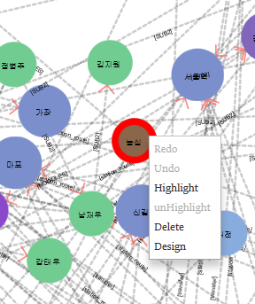 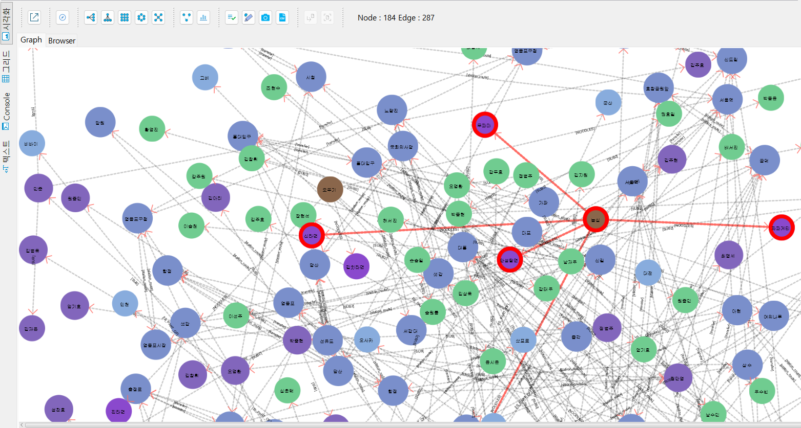HighLight 해제¶
HighLight를 해제 하기 위해서는 마우스 오른쪽 버튼은 팝업 메뉴를 활성화 한 후 [unHighLight]를 선택하거나 다른 정점을 두번 클릭하여 선택하면 해제 된다.
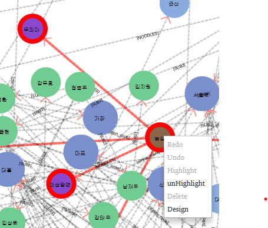시각화 편집 기능¶
HighLight 기능과 마찬가지로 팝업 메뉴 활성화하여 시각화 된 화면에 정점 및 간선 삭제 기능이 제공된다. Undo, Redo를 통해 최대 5개 까지 저장하여 삭제 및 복원이 가능하다.
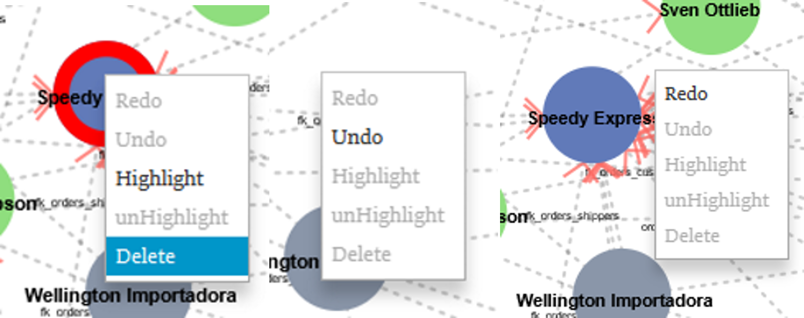표시 데이터 개수 설정¶
아래 화면에서 파란색으로 표시된 값에 따라 결과 Data Row 개수를 설정 할 수 있으며, Default 값는 200이다. PC 성능에 따라 개수를 조절하여 사용 할 수 있다.
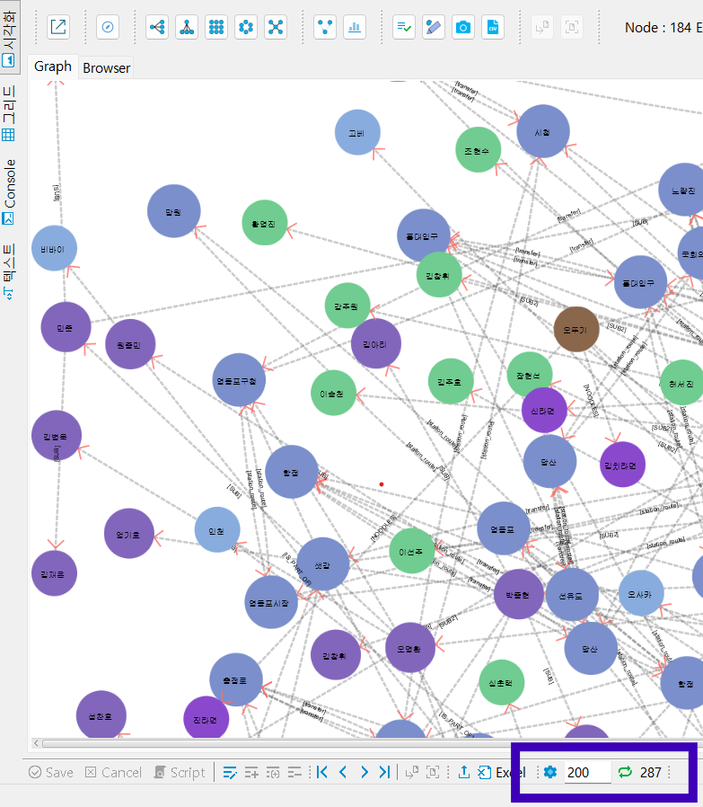추가 데이터 표시 기능¶
아래 화면에서 빨간색,파란색으로 표시된 아이콘 버튼을 이용하여 데이터를 결과 데이터를 추가로 받아 올 수 있다. 빨간색 버튼은 표시 데이터 개수 설정을 통해 설정된 개수만큼 추가로 가져와 표시하거나 전체데이터를 가져와 표시 할 수 있다. (전체데이터를 가져올때는 경고 메세지가 발생한다)
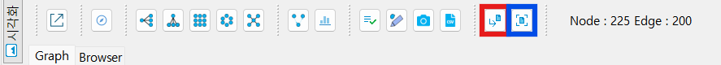결과창 분리 기능¶
아래 빨간색으로 표시된 버튼을 사용하여 결과창을 Main 프로그램에서 분리할 수 있다. 분리 후 다시 실행 할 경우 Main 프로그램으로 다시 통합된다.
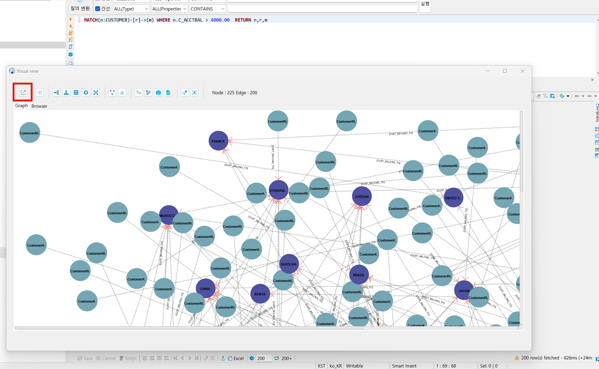Json 내보내기 및 내장 브라우징¶
아래 빨간색으로 표시된 Tab을 이용하여 Json내보내기 및 내장 브라우징 사용이 가능하다. 각 주소를 입력 후 Send 버튼을 누르면 Json Url로 Data를 보낸 후 브라우저를 업데이트 한다. Json Data는 3d-force-graph(https://vasturiano.github.io/3d-force-graph/)에 format을 사용하며, 브라우저는 Equo Chromium(https://www.equo.dev/chromium)에 Trial 버전을 사용하였다.
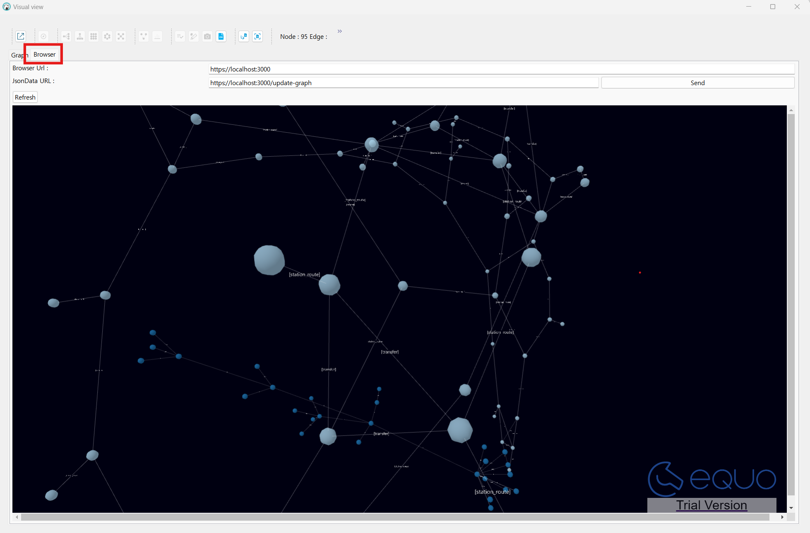